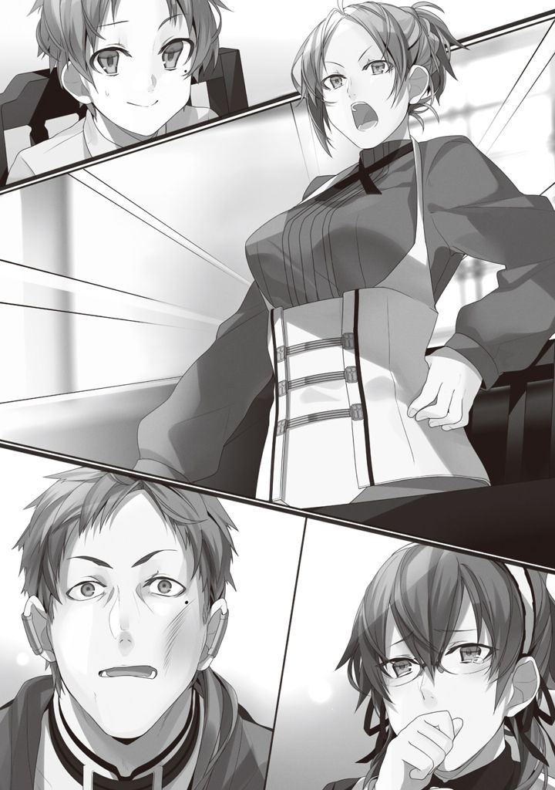

Volume 1 · Unofficial AI-assisted fan translation
Episode 9: Emergency Family Meeting
We found out Zenith was pregnant. A little brother or sister was on the way, apparently.
The family's growing! Yay, Rudy-chan!!
Zenith had been worrying these past few years.
It had weighed on her that no more children had come after me.
She had been letting it slip with a sigh that maybe she couldn't have children anymore, but starting about a month ago, it began with a change in her sense of taste, then nausea, vomiting, fatigue. The symptoms of what they call morning sickness had started to show. It was a feeling she remembered, so she went to the doctor, and was told it was all but certain, apparently.
The Greyrat house erupted in cheers at the news.
If it's a boy, what'll we name him; if it's a girl, what'll we name her. We still have a spare room, right? For baby clothes, we'll use Rudy's hand-me-downs.
There was no end of things to talk about.
That whole day was lively, a day the laughter never stopped. I was genuinely happy too, and put in my vote for a little sister if possible. Little brothers go around breaking the things I treasure, after all. (With a bat.)
And then.
The problem surfaced another month after that.
It came out that Lilya the maid was pregnant.
"I am terribly sorry. I have become pregnant."
With the whole family gathered at the table, Lilya reported her pregnancy, flat and matter-of-fact.
In that instant, the Greyrat house froze solid.
(Who's the man...?)
The mood was not one where you could ask something like that.
Everyone had a faint suspicion. Lilya was a hardworking maid. She sent nearly all her wages home to her family, too. Unlike Paulo, who went out often to settle the village's problems, or Zenith, who regularly went to help at the village clinic, she almost never left the house for anything besides work. You never heard any rumors about Lilya being especially close to anyone, either.
Or maybe with some passing stranger, I thought, but...
I know.
About Paulo, forced into a life of abstinence ever since Zenith got pregnant. About how the guy, with more lust than he knew what to do with, snuck off in the middle of the night to Lilya's room.
If I were really a child, I'd have figured the two of them were playing cards or something.
But sadly, I know. That what they were doing was no game of Old Maid. It was a game of Old Mom-out.
But, I did wish he'd been a little more careful. Those two, you know the ones, say it too, don't they?
'Good boys and girls!! "Just do it and you can make it." Truly a fine saying. It teaches us the importance of contraception!!'
I'd like Paulo, sitting there white as a sheet, to hear those words too.
Not that I know whether this world even has the concept of contraception.
Of course. I have no intention of blabbing the truth and wrecking the family.
Laying a hand on the maid and all: normally I'd call that unforgivable.
But, Paulo did me a solid over the Sylphie thing. Just this once, I'll let it slide.
It's tough being a ladies' man. So, if he came under suspicion, I'd cover for him. I could even cook up a fake alibi. Having decided that, I shot Paulo a glance that said, don't worry, I've got you.
And at that same moment, Zenith looked at Paulo with a face that said, don't tell me.
As chance would have it, my eyes and Zenith's both came to rest on Paulo at once.
"I-I'm sorry. It's p-probably my kid..."
The guy spilled his guts, just like that.
Pathetic... No, maybe I should praise him as an honest man. Though then again, all the times he'd sat at the table with the whole family gathered and pompously bestowed his wisdom on me, "Be honest," "Be a man," "Protect girls," "Don't do anything dishonest," maybe he just couldn't lie after all that.
Not bad at all. I don't hate that about you.
(Though the situation couldn't be worse...)
Watching Zenith rise with a face like a Nio guardian and raise her hand high, that was what I thought.
And so, with Lilya included, an emergency family meeting broke out.
The first to break the silence was Zenith.
She held control of the meeting.
"So. What do you intend to do?"
From where I sat, Zenith was extremely calm.
She hadn't even thrown a fit at her cheating husband; all she'd done was slap him across the face once.
Paulo's widdle cheek bore a red maple-leaf print.
"After I have assisted the mistress through her delivery, I thought I would take my leave of the household."
The one who answered was Lilya. She was extremely calm too. Maybe in this world, this kind of thing happens a lot. The maid the master helps himself to. It becomes a problem, and she leaves the house.
Yep.
Normally a pitiful story like that gets me going. But with the air in here, not so much as a twitch. Even I have standards. Unlike Paulo.
Paulo, by the way, was cowering off at the edge.
A father's dignity? Ain't no such thing.
"And the child?"
"I thought I would give birth within the Fittoa Region, and then raise the child in my hometown."
"Your hometown was down south, wasn't it."
"Yes."
"Weakened as you'll be after giving birth, you won't hold up on a long journey."
"...That may be so, but I have nowhere else to turn."
The Fittoa Region is in the northeast of the Kingdom of Asura.
From what I know, getting to the regions considered 'the South' in the Kingdom of Asura takes close to a month, even changing from one stagecoach to the next. A month, yes, but the Kingdom of Asura has good public order and a good climate. Taking stagecoaches, it's not what you'd call grueling.
But, that's for an ordinary traveler.
Lilya has no money. She can't ride the stagecoaches, so the journey would be on foot.
And even if the Greyrat house paid her travel costs and she could take the stagecoaches, the danger wouldn't change.
A mother who just gave birth, traveling alone. Say I'm a bad guy and I spot that. What do I do?
Jump her, obviously. Perfect mark. She's practically begging to be targeted. Take the kid hostage or something, tie the mother down with some half-baked verbal promise. First grab the money, strip her of everything she's got. Apparently this world has slavery, so sell off both of them, kid and mother, and done.
However much the Kingdom of Asura may be the country with the best public order in this whole world, there must still be more than zero bad types around. Odds are high she'd be attacked.
Like Zenith said, there's the physical side too. Even if Lilya's stamina held out, what about the child?
Can a newborn survive a month's journey?
No way.
And of course, if Lilya collapses, the child goes down with her. If one of them gets sick and there's no money to see a doctor, they both go under.
A picture rose before my eyes: Lilya, a baby in her arms, collapsed in deep snow.
Speaking for myself, I don't want Lilya to die a death like that.
"Um, Mom, isn't that going a bit far..."
"You keep quiet!!"
Paulo timidly opened his mouth, but Zenith cut him off sharply and he shrank like a child.
In this matter, he has no right to speak. Paulo is useless.
"............"
Zenith bit her nail with a troubled face. It seemed she was torn too.
It's not as if she hates Lilya enough to want her dead.
Quite the opposite, the two of them get along. They've done the housework together for six whole years; you could even call them best friends.
Suppose the child Lilya carried weren't Paulo's.
If, for example, it were a child conceived because she'd been raped in some back alley, Zenith would have taken Lilya under her protection without a moment's hesitation and allowed... no, required her to raise the child in our home. From the drift of the conversation, it seems this world has no concept of abortion, either.
Right now, I think, two feelings are battling it out inside Zenith.
The feeling of liking her, the feeling of being betrayed.
I think it's amazing that Zenith, in this situation, hasn't tipped toward the latter. Me, I'd be so jealous I'd throw her out on the spot.
Lilya's attitude probably has something to do with Zenith staying calm, too. Lilya isn't making a single excuse; she's trying to take responsibility. Responsibility for betraying the house she has served.
But, if you ask me, the one who ought to take responsibility is Paulo. Lilya taking responsibility all by herself is wrong.
Absolutely wrong.
A parting this wrong can't be allowed.
I decided to help Lilya. Lilya has taken care of me. We don't have much to do with each other, and she has hardly ever spoken to me.
But she looks after me properly. When I work up a sweat at sword practice, she has a cloth ready for me. When I get soaked in the rain, she has hot water ready for me. On cold nights, she has a blanket ready for me. When I forget to put a book back on the shelf, she tidies it away properly for me.
And above all.
Above all... yes, above all.
She knows the panties exists, and has kept quiet about it for me.
Yes, Lilya knows.
It was back when I still thought Sylphie was a boy.
It was raining. Partly as review, I was reading the plant encyclopedia in my room. Then Lilya came in and started cleaning. Absorbed in the encyclopedia, I didn't notice Lilya cleaning near the hiding place. By the time I noticed, it was too late: pinched between Lilya's fingers were the panties.
No way, I thought. Sure, I'd been a shut-in for nearly twenty years. With nobody to hide anything from, I'd left my mess out in the open. My desktop even had a folder called "lewd pics." So maybe my Concealment skill had rusted over. But to think it would be found this easily. And I'd hidden it for real, too... So this is the creature known as a maid.
At the same moment something inside me crumbled, I heard the sound of the blood draining from the top of my head.
The interrogation began.
Lilya said, "What is this?"
I answered, "Wh-wh-wh-what could that possibly be, that thi-hahahahahahaha."
Lilya said, "It has a smell, doesn't it."
I answered, "S-sesame chili oil, the scent of that or something, maybe, isn't it, isn't it not, wouldn't you say?"
Lilya said, "Whose are they?"
I answered, "...I'm sorry, they're Roxy's."
Lilya said, "Wouldn't it be better to wash them?"
I answered, "Washing that is out of the question!!"
Without a word, Lilya put the panties back in the hiding place.
And then, turning her back on me as I shook in terror, she left the room.
That night, I braced myself for a family meeting.
But, nothing happened.
Late into the night, I lay under the covers shaking like a leaf. Even the next morning, nothing happened.
She hadn't told anyone.
That debt, I'll repay now.
"Mother. We are getting two brothers or sisters all at once, so why is everything so gloomy?"
As childlike as possible.
Lilya's pregnant too. Yay, lots and lots of family. So why are you mad?
Giving off that kind of vibe, I broached the subject.
"Because your father and them did something they shouldn't have."
Zenith said it with a sigh. Mixed into her voice was a bottomless anger. But, the anger was not aimed at Lilya. Zenith knows too.
Who is most to blame.
"I see. But can Lilya really say no to Father?"
"What do you mean?"
In that case, sorry, Paulo, but this time you had it coming. I'll have you take the whole rap yourself.
Sorry, pal. Paying you back for the Sylphie thing will have to wait till next time.
"I know about it. Father is holding something over Lilya."
"Huh? Is that true!?"
Believing my made-up story, Zenith looked at Lilya in surprise.
Lilya was expressionless as always, but it seemed something came to mind, because her eyebrow gave a twitch. Did he really have something on her? Judging by how they usually acted, it looked more like Lilya had something on Paulo...
Never mind. All the better for me.
"The other day, I got up in the middle of the night to go to the bathroom, and when I passed Lilya's room, Father was saying, 'If you don't want me telling everyone about something-or-other, be a good girl and open your legs.'"
"Wha—!! Rudy, what nonsense are you..."
"You keep quiet!!"
Zenith shrieked, shutting Paulo down.
"Lilya, is what he just said true?"
"No, nothing of the sort..."
Lilya started to say it, then her eyes wandered.
So something really did come to mind. Or maybe that was some roleplay they'd tried.
"Of course. It's not something you could say happened, not from your own mouth..."
Zenith drew her own conclusions from that reaction.
Paulo, eyes rolling in shock, opened his mouth, but no words came out; he just gaped open and shut like a goldfish.
All right. Time to press the attack.
"Mother. I think Lilya did nothing wrong."
"You're right."
"The one who did wrong is Father."
"...You're right."
"It is wrong for Lilya to suffer when it is Father who did wrong."
"...You're right."
Not much of a response... one more push.
"I have fun every day with Sylphie, so wouldn't it be good if the little brother or sister I am getting had a friend about the same age, too?"
"...You're, right."
"And besides, Mother. To me, both of them are my siblings."
"...Fine, I get it. Really, I'm no match for you, Rudy."

Zenith let out a big sigh.
Sorry for all the trouble, Maman.
"Lilya, you are staying here. You're family now!! I won't allow you to leave on your own say-so!!"
The final word.
Paulo's eyes went wide, and Lilya, a hand over her mouth, was tearing up.
And with that: case closed.
And so, by pinning all the blame on Paulo, the matter was settled without further trouble.
Last of all, Zenith sent Paulo a flat, mechanical, ice-cold look.
In certain circles that might count as a reward, but my balls gave a tight little flutter.
With that look in her eyes, Zenith went back to the bedroom alone.
Lilya was crying. Her face stayed as expressionless as ever, while the tears fell from her eyes drop after drop.
Paulo was trying to put his arm around her shoulders, but kept hesitating.
For now, I'll leave this to the playboy.
I followed after Zenith and headed for the bedroom. If this whole business ended with Paulo and Zenith getting divorced, that would be a problem of its own, after all.
When I knocked on the bedroom door, Zenith showed her face right away.
"Mother. What I said a moment ago was a lie I made up. Please don't come to hate Father."
Without missing a beat, without any preamble whatsoever, I said it.
Zenith seemed taken aback for a moment, but then she smiled wryly and, her face gentle, stroked my head.
"I know that. I don't think I fell in love with that bad a man, either. He's an idiot with an eye for the ladies, so I was ready for something like this to happen someday. It was just so sudden, it surprised me, that's all."
"...Father has an eye for the ladies?"
On a whim, I tried asking, playing dumb.
"Yes. Not so much lately, but in the old days he had no restraint at all. Who knows, maybe you've got an older brother or sister somewhere out there that we just don't know about, Rudy."
And then, the hand stroking my head tightened.
"You mustn't grow up into that kind of man, Rudy, okay?"
Creaking and grinding, the hand stroking, no, gripping my head squeezed tighter and tighter...
"You have to treat Sylphie-chan right, okay?"
"Ow, ow, of course, Mother, it hurts."
I felt like I'd had one big, firm warning drilled into me about my conduct from here on.
But, at this rate, it'll probably be fine. How things go from here depends on how hard Paulo tries.
Still, jeez, what a pain it is having such a wild child for a dad.
There won't be a second time, señor.
The next day.
Sword practice was freakin' brutal.
I even went and covered for him afterward, so I wish he'd quit taking it out on me.
★ Lilya's point of view ★
I will be blunt.
The pregnancy is my fault. It was I who seduced Paulo.
When I first came to this house, I had no such intention. But hearing the two of them moaning night after night, and cleaning a room thick with the smell of man and woman, I am a woman myself; the lust builds up.
At first, I took care of it myself.
But when I watch Paulo practicing the sword in the yard every day, the embers I have not managed to burn off grow large, deep down inside my body.
When I watch Paulo practicing the sword, I remember the first time.
That was when I was much younger, when I was living at the kendo dojo. The man was Paulo, creeping into my bed at night and taking me by force. I did not dislike him, but we were not in love. It could hardly be called romantic, so at first I cried over it.
But, the next one to make eyes at me was a greasy minister.
Once I judged it better than that thing, it no longer bothered me at all.
When I heard Paulo was looking for a maid, too, I thought no more than that I could use what happened back then as a bargaining chip.
The Paulo I met again after so long was far more of a man than back then.
The boyishness was gone; he had become a man who was both stern and powerfully built.
Faced with a man like that, I think I did well to hold out for six whole years.
At first, Paulo did not make eyes at me either.
Had it stayed that way, the heat would gradually have faded too.
But, the sexual harassment he committed now and then fanned the fire of desire into a blaze.
I could endure it, but I was aware I was balanced on a knife's edge.
Zenith's pregnancy broke the dam.
Seeing Paulo with more lust than he knew what to do with, I thought of it as an opportunity. Thought of it as an opportunity, and lured Paulo into my room...
So, it is my fault. I thought the pregnancy was a punishment. Punishment for giving in to desire and betraying Zenith.
But, I was forgiven.
Rudeus forgave me.
That clever child understood exactly what had happened, steered the conversation with precision, and brought it neatly all the way to a settlement.
Such composure, as if he had been through something like this before.
Eerie... no, I will stop calling him that.
I found Rudeus eerie, and avoided him at every turn.
Rudeus is perceptive. He must have noticed he was being avoided. And yet Rudeus saved someone like me. It cannot have felt good to him.
Over his own feelings, he chose to save me and this child.
I am ashamed of myself, for having called him eerie and avoided him.
He is the one to whom I owe my life. A person worthy of respect.
He is to be revered. A person I should serve with the utmost respect until the day I die. No... all this time, I have treated him with disregard. I alone will never be able to repay it all.
Yes.
If the child in my belly is born safely, and grows up.
This child, to Rudeus...
I will have this child serve Master Rudeus.
★ Rudeus's point of view ★
After that, a few months went by without anything in particular happening.
Sylphie's progress was remarkable. She could now use chantless magic up to Intermediate. Little by little, she was becoming able to do finer things, too.
My skill with the sword, on the other hand, hadn't changed much.
It seemed to be getting better, but since I still couldn't score a single clean point off Paulo, I couldn't really feel it.
Also, Lilya's attitude softened. Up to now, it seems, she'd been wary of me. Well, sure, I'd been throwing magic around like crazy since I was tiny, so that's only natural.
She was still basically expressionless, but in her words and actions here and there, I'd come to sense something like an oddly exaggerated respect. Being respected feels nice, but it leaves Paulo no standing, so I'd like her to tone it down a notch.
Anyway, ever since that business, Lilya and I had started talking little by little.
Mostly old stories about her and Paulo.
Apparently, Lilya once learned the sword at the same dojo as Paulo.
Back then Paulo had talent, but hated practice, or so she said. He would skip practice and go out on the town to play around, or so she said. Lilya had lost her virginity when the Paulo of back then jumped her in her sleep, or so she said. Paulo, afraid of that coming out, ran away from the dojo, or so she said.
She told me all that, flat and matter-of-fact.
The more of Lilya's old stories I heard, the harder my Paulo stock tanked.
Rape and cheating. Paulo is scum.
But, deep down, Paulo's not a bad guy either. Free-spirited and childish, the type that tickles a woman's maternal instinct, it seems. And in front of me, he tries hard to act like a father. He just can't hold himself back much, and once an idea hits him he goes straight for it, that's all; he is by no means a bad guy.
"What, staring at me like that? Want to grow up into a cool guy like your dad?"
I was watching Paulo in the middle of sword practice, and he asked me that.
The nerve of the guy.
"A man who cheats and brings his home to the brink of collapse: that is what you call cool?"
"Grnngh..."
Paulo made a sour face. Seeing that expression, I made up my mind to watch myself too.
Then again, I'm the dense type. I don't cheat. The girls just fight over me on their own. I just steer it so that they do.
"Well, if that taught you a lesson, please refrain from laying a hand on anyone other than Mother."
"L-Lilya's fine, right?"
This man hasn't learned his lesson, apparently.
"Next time, Mother might go back to her parents' house without a word, you knowww..."
"Gr, grnngh..."
Keeping two women, does he think he's built himself a harem or something? Land a beautiful wife, keep a maid he can lay hands on anytime, teach his son the sword, and live out a debauched early retirement in the countryside.
Whoa, whoa, I'm jealous. Isn't that one of the best endings there is?
To put it in terms of a certain light novel, it's like making moves on both Lo○ise and Si○sta and getting away with it.
Shouldn't I quit going on about being the dense type too, and learn from his example...?
No, no good. Calm down. Remember that look Zenith gave at the end of the family meeting.
Do you want to get a look like that?
One wife is plenty.
"Y-you're a man too, you get it, right?"
Paulo still wouldn't let it go. I get it, but I won't agree.
"What could your six-year-old son possibly understand?"
"Come on, you've gone and called dibs on Sylphie-chan yourself, haven't you? That girl's gonna be a real beauty someday."
On that point, I cannot help but concur.
"I expect she will. Though I think she's plenty cute just as she is now."
"You know what's what."
"Pretty much."
Paulo's a scumbag, but when all's said and done, we see eye to eye.
On the outside, I'm a child; on the inside, a NEET past forty. Genuine, bona fide scum.
Only inside games, but I like girls too, and I was a huge fan of harems. At the core, maybe I'm the same as Paulo the womanizer.
Or rather, it was after the incident where I stripped Sylphie that I started feeling we see eye to eye.
After that incident, I feel like Paulo reached out to me from his side and opened up. Maybe because I'd seen his weak side, he stopped forcing himself to be a stern father, too. He's growing as well.
"Nfuhuhu..."
I happened to look over, and Paulo was grinning a big, sly grin.
His gaze wasn't on me but fixed on something behind me. I turned around, and Sylphie was standing there. Rare for her to come all the way to our house.
Looking closely, she was a little red in the cheeks and fidgeting.
She'd been listening, apparently.
"Go on, say what you just said to her again."
A classic Paulo tease.
I let out a little snort through my nose. Jeez, he doesn't get it at all.
Paulo's still got a long way to go.
Even words that feel nice, you get used to them if you hear them over and over, and the thrill wears thin. Acting dense, and just every so often letting your true feelings slip out as if by accident: that's what works.
Every so often. Saying it twice is a no-go.
So, I smiled a big smile and gave Sylphie a silent wave.
Besides, Sylphie's still six. That kind of talk is ten years too early.
If she gets told 'so cute, so cute' and spoiled from this age on, she won't turn out to be much of a woman.
My older sister from my past life is a perfect example.
"U-um, you know. Rudy, you're, um... cool too, you know?"
"Is that so? Thank you, Sylphie."
Flashing my pearly whites with a sparkle (or so I imagined), I gave her a big grin.
Trust Sylphie to be good at polite flattery. With that upward look of hers, I nearly thought she was serious. I meant it when I said Sylphie was cute, but there's no romantic feeling in it.
Not for now, anyway.
"Well then, Father. I shall be heading out."
"Don't you go pushing her down in the grass, now."
Like I would. I'm not you.
"Mother!! Father is—"
"Whoa, stop, stop it...!!"
Today, too, peace reigned in our house.
Some time after that, Zenith gave birth.
It was rough. The baby was breech, after all.
Since Lilya was pregnant too, we had called in the village midwife as help, but the old lady started saying she was throwing in the towel. That's how hard a birth it was.
The delivery dragged on, and mother and child both ended up in danger.
Lilya mustered every bit of knowledge she had and worked desperately. I did what little I could to back her up, too, by casting healing magic over and over.
It paid off: somehow, the delivery was a success.
The baby came safely into this world and let out a healthy first cry.
It was a girl. A little sister. Good thing it wasn't a little brother.
The relief barely lasted a moment before Lilya went into labor.
It happened right when everyone was worn out and had let their guard down.
The words "premature birth" danced through my head.
But, this time the midwife came in handy. She might be a klutz with a breech baby, but premature births, apparently, she had experience with. That's age for you.
I followed the old lady's instructions at once. I planted a kick on the butt of the dazed Paulo and made him carry Lilya to my room. Meanwhile, I used magic to make fresh water for bathing the baby, gathered up every clean cloth I could find, and came back to the old lady's side.
After that, I left it to the old lady.
The moment the child was born, Lilya bravely called out Paulo's name.
Paulo, drenched in sweat, was holding Lilya's hand tight.
The child born was smaller than Zenith's daughter, but even so, she let out a healthy first cry.
This one was a girl too.
Both girls. Little sisters.
Saying stuff like "Both of 'em girls, huh," Paulo was grinning, heh-heh, like an idiot.
A face that screamed doting idiot parent. Today was the second time I'd seen that face.
Even so, I can't help pitying Paulo. After all, the women's faction in our house has now doubled. In a situation like that, who ends up at the very bottom?
That would be the father who cheated with the maid and got her pregnant.
I'm aiming to be a big bro who's respected and super coolio, but Paulo surely won't be respected.
Zenith's daughter, Norn.
Lilya's daughter, Aisha.
That was what they were named.